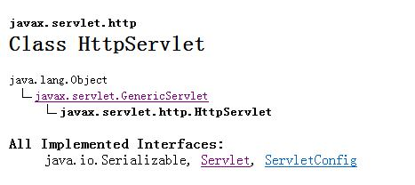

Servlet
Servlet是一个标准的Java类，它的特殊之处是可以处理HTTP请求。
JSP与Servlet有什么关系？
JSP是以另一种方式实现的Servlet，Servlet是JSP的早期版本，在JSP中，更加注重页面的表现，而在Servlet中则更注重业务逻辑的实现。
该方法描述为：
public void init(ServletConfig config)throws ServletException当Servlet第一次被加载时，服务器调用init()方法初始化一个Servlet对象
该方法描述为：
public void service(HttpServletRequest request, HttpServletResponse response)throws ServletException, IOExceptionservice()方法可以被多次调用，每次用户请求都导致service()方法被调用，调用过程运行在不同的进程中，互不干扰
该方法描述为：
public void destroy()
当Servlet引擎终止服务时，比如关闭服务器等，destroy()方法会被执行，销毁Servlet对象。
总结：在整个Servlet的生命周期中，init()方法和destroy()方法都只被调用一次，
而service()方法被调用多次。

有上述继承树可知：GenericServlet是父类，它实现了Servlet接口中的service()方法，但它还是一个抽象方法，所有子类都应该实现这个方法。HttpServlet继承了GenericServlet类，自然也要实现service()方法。
service()方法
HttpServlet类有两种形式的service()方法：public 和 protected，描述如下：
public void service(ServletRequest request, ServletResponse response) throws ServletException, IOException
protected void service(HttpServletRequest request, HttpServletResponse response) throws ServletException, IOException
当包容器为一个Servlet收到一个请求时，这个方法的调用顺序是：
- 包容器调用public的service()方法；
- 在把参数分布转换为HttpServletRequest和HttpServletResponse后，public的service()方法调用protected的service()方法；
- 根据HTTP请求方法的类型，protected的service()调用doXXX()方法之一。